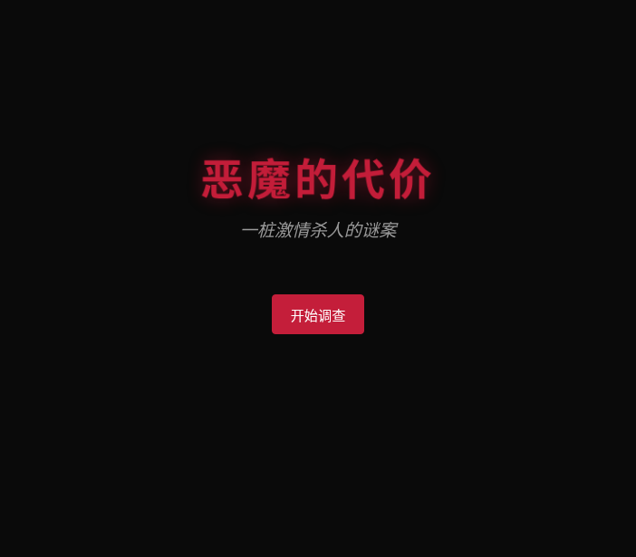
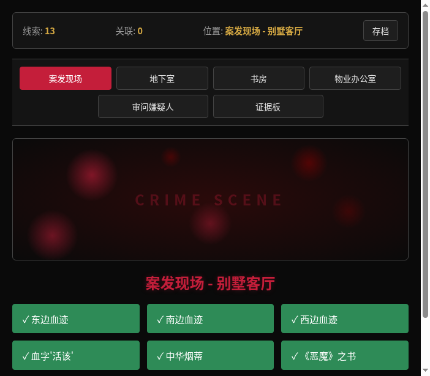
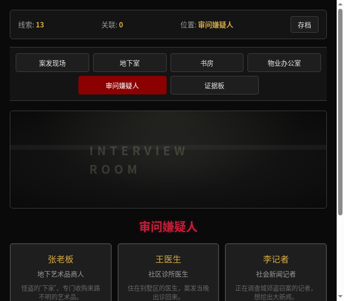
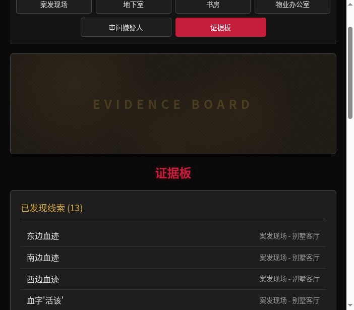

一款沉浸式网页推理破案游戏。打开浏览器，你就是侦探。
恶魔的代价 —— 一款沉浸式推理破案游戏
大多数人对推理破案有浓厚兴趣，但市面上的推理游戏要么门槛太高（硬核桌游），要么太浅（选择题式手游），缺少一种"有真实调查感、但又不至于劝退"的中间态体验。玩家想要的是：亲自搜证、自己推理、亲手指认真凶的参与感。
经典推理小说和悬疑剧一直很受欢迎，但能让人"亲自当侦探"的互动体验并不多。我想做一个让玩家真正进入案发现场、搜集线索、审问嫌疑人、建立证据关联、最终推理出真凶的网页游戏，用轻量化的方式还原推理的乐趣。
一款基于网页的沉浸式文字推理游戏，打开浏览器即可游玩，无需下载安装。
推理小说/悬疑剧爱好者、剧本杀玩家、喜欢烧脑解谜的休闲玩家。年龄层大致在 16-35 岁。
碎片时间（午休、通勤）打开浏览器玩上一局，单局约 20-30 分钟即可完成一次完整推理流程。也适合朋友间讨论"你觉得谁是凶手"的社交场景。
想玩推理游戏但不想学复杂规则（桌游门槛高）；玩手游推理又觉得太简单没意思（缺乏真实调查感）；想和朋友一起讨论案情但缺少一个共同的"案件"作为话题。现有的网页推理游戏大多画面粗糙或剧情套路化，缺少让人投入的叙事体验。
推理游戏本质上是对逻辑思维和观察力的训练。玩家在游戏中需要从碎片化线索中提取关键信息、建立因果关联、排除干扰项，这些能力在日常决策中同样重要。同时，游戏故事探讨了"正义与私刑"的灰色地带——张保安害死过人却冒充英雄，怪盗偷画却冲动杀人——让玩家在推理之余思考人性的复杂，不只是简单的"好人抓坏人"。
传统剧本杀需要 4-8 人组局、2-4 小时时间、主持人引导，门槛很高。本游戏将完整的推理体验压缩到 20-30 分钟的单人流程中，打开浏览器即可开始，随时随地可暂停存档，大幅降低了享受推理乐趣的成本。




在 4 个场景中搜索 13 条线索，每条线索都有独立描述和关联关系
对 4 名嫌疑人进行审讯，部分对话需要先发现特定线索才能解锁
在证据板上将两条线索关联，系统给出推理分析，还原事件真相
收集足够线索并建立关键关联后，指认你认为的真凶
随时保存进度，下次打开浏览器继续调查
探讨正义与私刑的灰色地带，结局发人深省